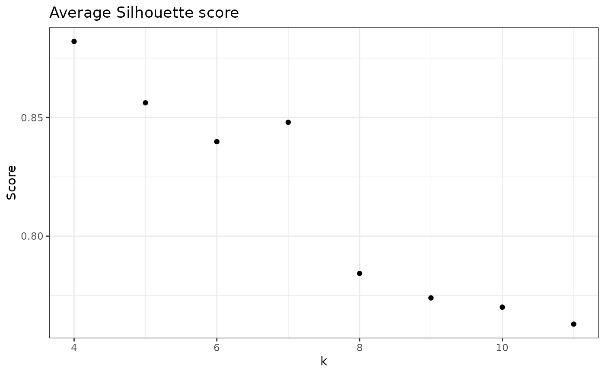

Calculates average Silhouette score for a given sample.
Usage
check_avgSil(
data,
sample_id = NULL,
samples_col = "Sample",
abundance_col = "Abundance",
range = 3:10,
with_plot = FALSE,
...
)Arguments
- data
A data.frame with, at least, a column for Abundance and Sample. Additional columns are allowed.
- sample_id
String with name of the sample to apply this function.
- samples_col
String with name of column with sample names.
- abundance_col
String with name of column with abundance values.
- range
The range of values of k to test, default is from 3 to 10.
- with_plot
If FALSE (default) returns a vector, but if TRUE will return a plot with the scores.
- ...
Extra arguments.
Details
The average Silhouette score index provides a sense of cluster definition and separation.
It varies between -1 (complete cluster overlap) and 1 (no cluster overlap),
the closest to 1, the better. Thus,
the k value with highest average Silhouette score is the best k.
This is the standard metric used by the ulrb package for automation of the decision
of k, in functions suggest_k() and define_rb().
Note: The average Silhouette score is different from the common calculation of the Silhouette index, which provides a score for each observation in a clustering result. Just like the name says, we are taking the average of all silhouette scores obtained in a clustering result. In this way we can have a single, comparable value for each k we test.
Data input
This function takes a data.frame with a column for samples and a column for abundance (minimum), but can take any number of other columns. It will then filter the specific sample that you want to analyze. You can also pre-filter for your specific sample, but you still need to provide the sample ID (sample_id) and the table always needs a column for Sample and another for Abundance (indicate how you name them with the arguments samples_col and abundance_col).
Output options
The default option returns a vector with CH scores for each k. This is a simple output that can then be used
for other analysis. However, we also provide the option to show a plot (set with_plot = TRUE) with
the CH score for each k.
Note that this function does not plot the classical Silhouette plot of a clustering result.
To do that particular plot, use the function plot_ulrb_silhouette() instead.
Explanation of average Silhouette score
To calculate the Silhouette score for a single observation, let:
\(a\) be the mean distance between an observation and all other observations from the same cluster; and
\(b\) be the mean distance between all observations in a cluster and the centroid of the nearest cluster.
The silhouette score (Sil), is given by:
$$Sil = \frac{(b-a)}{max(a,b)}$$
Once you have the Silhouette score for all observations in a clustering result, just take the simple mean and get the average Silhouette score.
Silhouette score explanation
From the above formula, \(Sil = \frac{(b-a)}{max(a,b)}\), it is clear that, for a given observation:
if \(a > b\), the Silhouette score approaches 1; this means that the distance between an observation and its own cluster is larger than the distance to the nearest different cluster. This is the distance that must be maximized so that all points in a cluster are more similar with each other, than they are with other clusters.
if \(a = b\), then the Silhouette score is 0; this means that the distance between the observation and its own cluster is equivalent to distance between the nearest different cluster.
if \(a < b\), then the Silhouette score approaches -1; in this situation, an observation is nearer the nearest different cluster, than it is to its own cluster. Thus, a negative score indicates that the observation is not in the correct cluster.
average Silhouette score intuition
If we take the average of the Silhouette score obtained for each observation in a clustering result, then we have the ability to compare the overall success of that clustering with another clustering. Thus, if we compare the average Silhouette score across different k values, i.e. different number of clusters, we can select the k with highest average Silhouette score.
References
Rousseeuw, P. J. (1987). Silhouettes: A graphical aid to the interpretation and validation of cluster analysis. Journal of Computational and Applied Mathematics, 20(C), 53–65. Pascoal et al. (2024). Definition of the microbial rare biosphere through unsupervised machine learning. Communications Biology, in peer-review.
Examples
library(dplyr)
# Just scores
check_avgSil(nice_tidy, sample_id = "ERR2044662")
#> [1] 0.9521452 0.8820316 0.8561774 0.8398216 0.8479872 0.7843358 0.7740169
#> [8] 0.7701163
# To change range
check_avgSil(nice_tidy, sample_id = "ERR2044662", range = 4:11)
#> [1] 0.8820316 0.8561774 0.8398216 0.8479872 0.7843358 0.7740169 0.7701163
#> [8] 0.7629755
# To see a simple plot
check_avgSil(nice_tidy, sample_id = "ERR2044662", range = 4:11, with_plot=TRUE)
